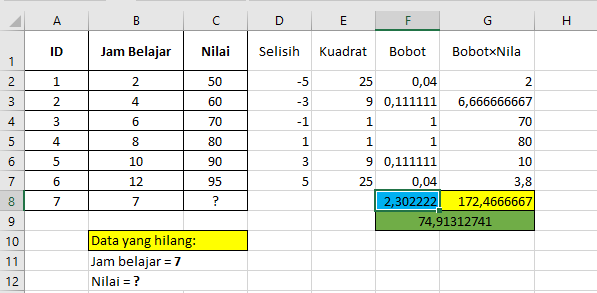
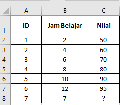
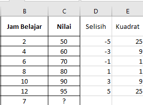
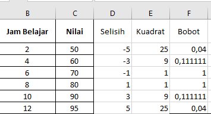
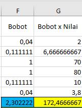
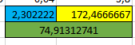
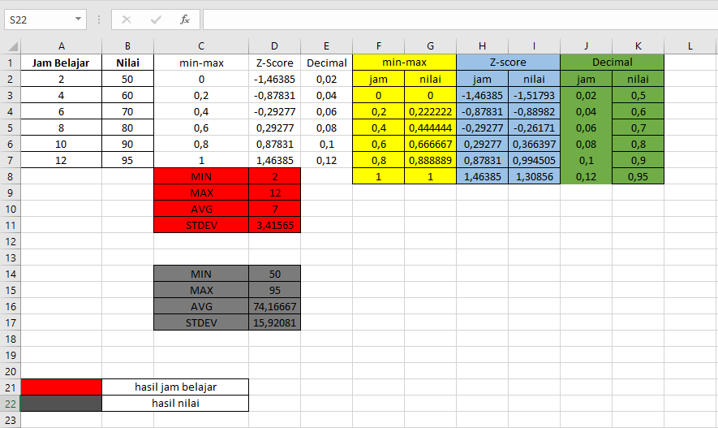
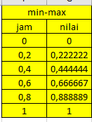
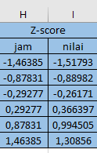
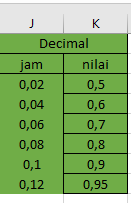

W-KNN#
Missing Values Imputation menggunakan Weighted K-Nearest Neighbor (WKNN)#
Hasil Excel:

1.1 Dataset#
Dataset berikut menunjukkan hubungan antara jumlah jam belajar dan nilai ujian mahasiswa.
ID |
Jam Belajar (X) |
Nilai Ujian (Y) |
|---|---|---|
1 |
2 |
50 |
2 |
4 |
60 |
3 |
6 |
70 |
4 |
8 |
80 |
5 |
10 |
90 |
6 |
12 |
95 |
7 |
7 |
? |

Data target:
Jam belajar = 7 jam
Nilai ujian = ? (hilang)
1.2 LHitung Jarak#
Menggunakan jarak Euclidean.
\(d(x_i, x_j) = (x_i - x_j)^2\)
Tetangga |
Selisih |
Kuadrat |
|---|---|---|
2 |
-5 |
25 |
4 |
-3 |
9 |
6 |
-1 |
1 |
8 |
1 |
1 |
10 |
3 |
9 |
12 |
5 |
25 |

1.3 Hitung Kemiripan#
Menggunakan rumus:
\(w = \frac{1}{d}\)
Jam Belajar |
Nilai |
Bobot |
|---|---|---|
2 |
50 |
0.04 |
4 |
60 |
0.111 |
6 |
70 |
1 |
8 |
80 |
1 |
10 |
90 |
0.111 |
12 |
95 |
0.04 |

1.4 Weighted Average#
Pembilang:
\((0.04 \times 50) + (0.111 \times 60) + (1 \times 70) + (1 \times 80) + (0.111 \times 90) + (0.04 \times 95)\)
Hasil: \(172,4666667\)
Penyebut:
\(0.04 + 0.111 + 1 + 1 + 0.111 + 0.04\)
Hasil: \(2,302222222\)

1.5 Hasil Estimasi#
\(\text{Nilai} = \frac{172,4666667}{2,302222222}\)
\(\approx 74,91312741\)

jam = [2, 4, 6, 8, 10, 12]
nilai = [50, 60, 70, 80, 90, 95]
target = 7
print("DATASET")
print("Jam Belajar :", jam)
print("Nilai :", nilai)
print("Target Jam :", target)
print()
DATASET
Jam Belajar : [2, 4, 6, 8, 10, 12]
Nilai : [50, 60, 70, 80, 90, 95]
Target Jam : 7
1. Hitung selisih#
jam = [2, 4, 6, 8, 10, 12] target = 7
\(selisih = jam - target\)
2 - 7 = -5
4 - 7 = -3
6 - 7 = -1
8 - 7 = 1
10 - 7 = 3
12 - 7 = 5
selisih = []
for j in jam:
selisih.append(j - target)
print("SELISIH (Jam - Target)")
print(selisih)
print()
SELISIH (Jam - Target)
[-5, -3, -1, 1, 3, 5]
2. Hitung kuadrat jarak#
selisih = [-5, -3, -1, 1, 3, 5]
-5 ** 2 = 25
-3 ** 2 = 9
-1 ** 2 = 1
1 ** 2 = 1
3 ** 2 = 9
5 ** 2 = 25
kuadrat = []
for s in selisih:
kuadrat.append(s ** 2)
print("KUADRAT JARAK (Selisih^2)")
print(kuadrat)
print()
KUADRAT JARAK (Selisih^2)
[25, 9, 1, 1, 9, 25]
3. Hitung bobot / kemiripan#
bobot = 1 / kuadrat
1 / 25 = 0.04
1 / 9 = 0.11
1 / 1 = 1.00
1 / 1 = 1.00
1 / 9 = 0.11
1 / 25 = 0.04
bobot = []
for k in kuadrat:
bobot.append(1 / k)
print("BOBOT / KEMIRIPAN = (1 / Kuadrat)")
print(bobot)
print()
BOBOT / KEMIRIPAN = (1 / Kuadrat)
[0.04, 0.1111111111111111, 1.0, 1.0, 0.1111111111111111, 0.04]
4. Hitung bobot × nilai#
bobot = [0.04, 0.1111111111111111, 1.0, 1.0, 0.1111111111111111, 0.04]
nilai = [50, 60, 70, 80, 90, 95]
bobot_nilai = bobot * nilai
0.04 * 50 = 2
0.1111111111111111 * 60 = 6.666666666666666
1.0 * 70 = 70.0
1.0 * 80 = 80.0
0.1111111111111111 * 90 = 10
0.04 * 95 = 3.8
bobot_nilai = []
for i in range(len(nilai)):
bobot_nilai.append(bobot[i] * nilai[i])
print("BOBOT x NILAI")
print(bobot_nilai)
print()
BOBOT x NILAI
[2.0, 6.666666666666666, 70.0, 80.0, 10.0, 3.8000000000000003]
5. Hitung pembilang#
bobot_nilai = [2.0, 6.666666666666666, 70.0, 80.0, 10.0, 3.8000000000000003]
pembilang = 2.0 + 6.666666666666666 + 70.0 + 80.0 + 10.0 + 3.8000000000000003
pembilang = 172.4666666666667
# 5. Hitung pembilang
pembilang = sum(bobot_nilai)
print("TOTAL PEMBILANG")
print(pembilang)
print()
TOTAL PEMBILANG
172.4666666666667
6. Hitung penyebut#
bobot = [0.04, 0.1111111111111111, 1.0, 1.0, 0.1111111111111111, 0.04]
penyebut = 0.04 + 0.1111111111111111 + 1.0 + 1.0 + 0.1111111111111111 + 0.04
penyebut = 2.3022222222222224
penyebut = sum(bobot)
print("TOTAL PENYEBUT")
print(penyebut)
print()
TOTAL PENYEBUT
2.3022222222222224
7. Estimasi nilai#
Rumus = \(\hat{y} = \frac{\sum_{i=1}^{n} w_i \cdot y_i}{\sum_{i=1}^{n} w_i}\)
\(\text{Estimasi\_Nilai} = \frac{\text{Pembilang}}{\text{Penyebut}}\)
estimate = pembilang / penyebut
print("HASIL ESTIMASI NILAI")
print(f"Nilai untuk jam belajar {target} ≈ {estimate}")
HASIL ESTIMASI NILAI
Nilai untuk jam belajar 7 ≈ 74.91312741312743
Normalisasi Data#
Pengertian Normalisasi Data#
Normalisasi data merupakan salah satu tahap penting dalam proses preprocessing data pada data mining dan machine learning. Tujuan dari normalisasi adalah mengubah nilai atribut ke dalam skala yang sama tanpa mengubah distribusi data secara signifikan. Hal ini penting karena banyak algoritma machine learning, seperti K-Nearest Neighbor (KNN), clustering, dan neural network, sensitif terhadap perbedaan skala data. Jika suatu atribut memiliki rentang nilai yang jauh lebih besar dibandingkan atribut lainnya, maka atribut tersebut dapat mendominasi proses perhitungan jarak atau pembelajaran model. Oleh karena itu, normalisasi digunakan untuk memastikan setiap atribut memiliki kontribusi yang seimbang dalam proses analisis data (GeeksforGeeks, 2025).
Menurut Patro dan Sahu (2015), normalisasi merupakan tahap preprocessing yang bertujuan untuk meningkatkan kualitas data sehingga proses analisis atau pemodelan dapat menghasilkan hasil yang lebih akurat. Dengan melakukan normalisasi, data yang memiliki skala berbeda dapat disesuaikan sehingga berada dalam rentang tertentu, seperti antara 0 sampai 1 atau memiliki distribusi dengan rata-rata 0 dan standar deviasi 1.
Hasil Uji coba Excel:

Jenis-Jenis Normalisasi Data#
Terdapat beberapa metode normalisasi yang umum digunakan dalam data mining dan machine learning, antara lain Min-Max Normalization, Z-Score Normalization, dan Decimal Scaling.
Min-Max Normalization#
Min-Max Normalization adalah metode normalisasi yang mengubah nilai data ke dalam rentang tertentu, biasanya antara 0 hingga 1. Metode ini dilakukan dengan mengurangi nilai data dengan nilai minimum kemudian membaginya dengan selisih antara nilai maksimum dan minimum.
Rumus Min-Max Normalization:
\(x' = \frac{x - x_{min}}{x_{max} - x_{min}}\)
Keterangan:
\(x\) = nilai data asli
\(x_{min}\) = nilai minimum pada dataset
\(x_{max}\) = nilai maksimum pada dataset
\(x'\) = nilai hasil normalisasi
Contoh Dataset:
Jam Belajar |
Nilai |
|---|---|
2 |
50 |
4 |
60 |
6 |
70 |
8 |
80 |
10 |
90 |
12 |
95 |
Nilai minimum = 2
Nilai maksimum = 12
Contoh perhitungan:
\(x' = \frac{2 - 2}{12 - 2} = 0\)
\(x' = \frac{4 - 2}{12 - 2} = 0.2\)
Hasil Normalisasi:
Jam Belajar |
Normalisasi |
|---|---|
2 |
0.0 |
4 |
0.2 |
6 |
0.4 |
8 |
0.6 |
10 |
0.8 |
12 |
1.0 |
Hasil Excel:

from sklearn.preprocessing import MinMaxScaler, StandardScaler
import numpy as np
data = np.array([[2],[4],[6],[8],[10],[12]])
nilai = np.array([[50],[60],[70],[80],[90],[95]])
scaler = MinMaxScaler()
normalized = scaler.fit_transform(data)
print("Min-Max Normalization Jam Belajar:")
print(normalized)
print("\nMin-Max Normalization Nilai:")
print(scaler.fit_transform(nilai))
Min-Max Normalization Jam Belajar:
[[0. ]
[0.2]
[0.4]
[0.6]
[0.8]
[1. ]]
Min-Max Normalization Nilai:
[[0. ]
[0.22222222]
[0.44444444]
[0.66666667]
[0.88888889]
[1. ]]
Z-Score Normalization (Standardization)#
Z-Score Normalization mengubah data sehingga memiliki rata-rata (mean) = 0 dan standar deviasi = 1. Metode ini sering digunakan dalam machine learning karena mampu mempertahankan distribusi data.
Rumus Z-Score: \(z = \frac{x - \mu}{\sigma}\)
Keterangan:
\(x\) = nilai data
\(μ\) = rata-rata data
\(σ\) = standar deviasi
\(z\) = nilai hasil normalisasi
Contoh
Dataset Jam Belajar:
Mean = 7 Standar deviasi = 3.41565
Contoh perhitungan:
\(z = \frac{2 - 7}{3.41565} = −1.46385\)
Jam Belajar |
Z-Score |
|---|---|
2 |
-1.46385 |
4 |
-0.87831 |
6 |
-0.29277 |
8 |
0.29277 |
10 |
0.87831 |
12 |
1.46385 |
Hasil Excel:

scaler = StandardScaler()
normalized = scaler.fit_transform(data)
print("Z-Score Normalization Jam Belajar:")
print(normalized)
print("\nZ-Score Normalization Nilai:")
print(scaler.fit_transform(nilai))
Z-Score Normalization Jam Belajar:
[[-1.46385011]
[-0.87831007]
[-0.29277002]
[ 0.29277002]
[ 0.87831007]
[ 1.46385011]]
Z-Score Normalization Nilai:
[[-1.51792938]
[-0.88982067]
[-0.26171196]
[ 0.36639675]
[ 0.99450545]
[ 1.30855981]]
Decimal Scaling#
Decimal Scaling adalah metode normalisasi dengan memindahkan posisi desimal dari nilai data hingga nilai maksimum berada dalam rentang tertentu.
Rumus: \(x' = \frac{x}{10^j}\)
Keterangan:
\(x\) = nilai data asli
\(j\) = jumlah digit maksimum pada data
contoh dataset:
Jam Belajar |
|---|
2 |
4 |
6 |
8 |
10 |
12 |
Nilai maksimum = 12 Jumlah digit = 2
Sehingga: \(x' = \frac{x}{10^2}\)
Hasilnya:
Jam Belajar |
Decimal Scaling |
|---|---|
2 |
0.02 |
4 |
0.04 |
6 |
0.06 |
8 |
0.08 |
10 |
0.10 |
12 |
0.12 |
Hasil Excel:

hasil_decimal_jam_belajar = []
for i in range(len(data)):
hasil_decimal_jam_belajar.append(float(data[i][0] / (10**2)))
print("Hasil Decimal Jam Belajar")
print(hasil_decimal_jam_belajar)
print()
hasil_decimal_nilai = []
for i in range(len(nilai)):
hasil_decimal_nilai.append(float(nilai[i][0] / (10**2)))
print("Hasil Decimal Nilai")
print(hasil_decimal_nilai)
Hasil Decimal Jam Belajar
[0.02, 0.04, 0.06, 0.08, 0.1, 0.12]
Hasil Decimal Nilai
[0.5, 0.6, 0.7, 0.8, 0.9, 0.95]
Referensi#
GeeksforGeeks. (2025). Data Normalization in Data Mining.
Tersedia pada: https://www.geeksforgeeks.org/data-normalization-in-data-mining/GeeksforGeeks. (2025). Normalization and Scaling in Data Analysis.
Tersedia pada: https://www.geeksforgeeks.org/data-analysis/normalization-and-scaling/GeeksforGeeks. (2025). What is Data Normalization in Machine Learning.
Tersedia pada: https://www.geeksforgeeks.org/machine-learning/what-is-data-normalization/Patro, S. G. K., & Sahu, K. K. (2015). Normalization: A Preprocessing Stage.
Tersedia pada: https://arxiv.org/abs/1503.06462